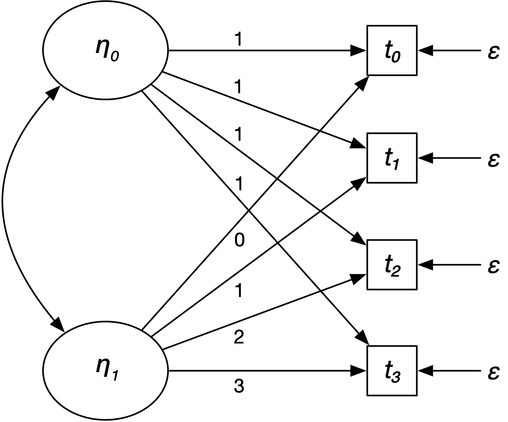
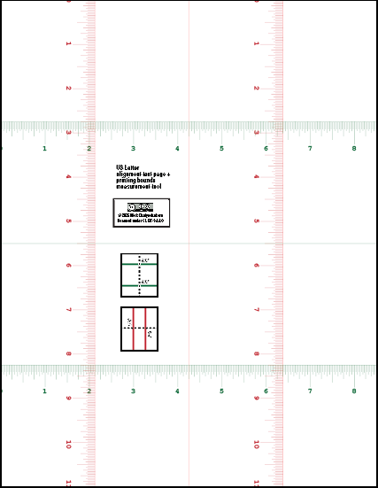

Nick Chaiyachakorn
chaiyach@ohsu.edu (academic CV tbd)
MS Biostatistics candidate
Oregon Health and Science University, School of Public Health

A bit about me.
I am a graduate-level biostatistician-in-training at Oregon Health and Science University in beautiful Portland, OR. I care equally about quantiative research methods and design.
Currently, I'm excited to be working with (Very) Big (Cohort) Health Data(sets), applying longitudinal methods to answer long-term outcomes questions. These datasets include the Health and Retirement Study and the All of Us cohort. I sling around R, SAS, and Python every day.
When I'm less busy with school, I want to return back to doing autism research in both community-participatory and epidemiological contexts.
I believe the most original research comes from interdisciplinary work within the social and health sciences, and dialogue between their statistical lenses, despite differences in language.
Finally, I aspire to be a statistical polyglot. I've had the privilege to learn from social psychologists, survey statisticians, psychometricians, high-performance computing engineers, geostatisticians, and epidemiologists. If you need an applied statistician in the social sciences, do reach out to the email above!
Recent statistical projects
These were analyses I helped conduct in the first half of 2026...
- Working with longitudinal cohort data from the Health and Retirement Study, I:
- ran survey-weighted survival analyses, to...
- ...compare the predictive utility of measures of "frailty" wrt. to post-retirement lifespan.
- For a local health system's warehouse division, I:
- consulted on methods of estimating demand for medical supplies...
- ...based on multiple years of discrete transaction data.
- For an autism research group I am being mentored in, I:
- conducted analyses of psychometric reliability and validity..
- ...to psychometrically validate a measure of overall health created with and for autistic adults, using multi-year pilot cohort data.
- For a geographer collaborating with an autism research group I intern with, I:
- linked Census data between multiple types of geographic units...
- ...to identify areas with native communities impacted by tribal health infrastructure.
Other things I've done...
As people collect visas to countries, I collect (and cherish) I've had the privilege of talking my research mentors into letting me doing the following types of analyses:
| Structural equation modelling – exploratory/confirmatory factor analysis, multi-group SEM, longitudinal models, growth curve analysis | ...on healthcare patient survey datasets |
| Multilevel/hierarchical/mixed effects modelling | ...on high-school/post-high school educational attainment data |
| Analysis of survey sample data (e.g. multi-stage stratified/clustered samples) | ...on public sector survey research at ...on epidemiological surveillance data (e.g. National Survey of Children's Health) |
| Latent variable methods in general – e.g. latent class and trajectory/transition analysis | ...on healthcare accommodations data |
| Psychometrics and psychological scale/instrument validation | ...on patient-reported outcome measures developed by and for autistic community members |
These are things I've learned in graduate-level classes, and wish I could use more in real life...
| Longitudinal models with separate cross-sectional and longitudinal effects (ahoy there Lord's Paradox!) | |
| Matching methods for causal analyses (the types epidemiologists do) | |
| Spatiotemporal modelling (co/variogram analysis and kriging, generalized additive models) | ...on spatiotemporal ad auction data |
| Survival/time-to-event analysis (proportional hazards models, mostly) | ...on breast cancer cohort study data |
One day, I'll learn...
| Complex survey weighting methods (raking) | ...like the pollsters do! |
| Advanced design of experiments – the type that industrial statisticians use | ...like the local statisticians at Intel do! |
Writing
I learn things by writing them up. Unfortunately, since grad school is killing me, I don't have a lot of time to wring things up. Nevertheless, here are some of the things I've been learning recently.
Trauma-informed care principles can be adapted for youth with autism. AAP News. (2025-12-01)
Unfortunately paywalled! Me and a research mentor, Dr. Katharine Zuckerman, co-authored a mini "op-ed" in the newsletter of the American Academy of Pediatrics about how autistic kids in crisis can be treated better by pediatric urgent care providers and hospitals.
A great deal, if not all, of these is true for autistic adults, and adults with disabilities in general.
Pediatricians are awesome. This benefitted heavily from the experiences of Dr. Zuckerman and her pediatrician colleagues who have thought a great deal about trauma-informed care of kids with autism (and other disabilities); especially those who experience crisis a great deal.
Geometric interpretation of the OLS estimator (2025-04-02)
Reminder to myself about the geometric intuition behind the OLS estimator as a projection operator, and its associated standard error.
R utilities for data analysts + other coding
Some R utility functions I've created in my time doing data analysis, that doesn't deserve a whole library. Other coding projects I've done when procrastinating from the actual data analyses I'm supposed to do.
R utility: save.flexibly - save
with elements/names specified in a list. (2026-03-24)
R's save function is a little hard to use
in data pipelines, since it requires the values to be saved
to be actual assigned variables. Here, save.flexibly
allows you to specify values to be saved as a list of the
form list("name1", value1, "name2", value2, ...)
Code for save.flexibly
# `save.flexibly` -- frontend to R `save` that takes names and values of objects
# to be saved as a list of the form list("name as string", value, "second name",
# second value...)
# Arguments:
# `save.flexibly(
# list(name1, object1, name2, object2...),
# ...arguments to 'save'...
#. )`
#
save.flexibly <- function(names.vals.list, ...) {
# Make sure 'names.vals.list' is a list of names
# followed by objects:
if(0 != (length(names.vals.list) %% 2))
stop("save.flexibly: 'names.vals.list' doesn't have an even number of items (i.e. name-value pairs")
should.be.names <- names.vals.list[seq(1, length(names.vals.list), 2)]
`all.names?` <- Reduce(`&`, lapply(should.be.names, is.character))
if(!(`all.names?`))
stop("save.flexibly: an odd element of 'names.vals.list' (1, 3, ...) isn't a string giving an item name")
# Okay, assign the elements...
for(base.i in seq(1, length(names.vals.list), 2)) {
assign(names.vals.list[[base.i]], names.vals.list[[base.i + 1]])
}
# And now save in one go; this requires synthesizing a call...
# ...of the form save(...names..., ...other arguments...)
to.call <- as.call(
append(
list(as.symbol("save")),
append(
should.be.names,
as.symbol("...")
)
)
)
eval(to.call)
}
color-detection-diagnostic.c
Mini-utility exercising multiple methods to determine terminal colour capabilities on *nix platforms - environment variables, 'ncurses', xterm-style Primary/Secondary Device Attribute queries, true-colour roundtripping, a visual demo, and process name detection.
libfixmathmatrix
A header-only (+ optional source file) amalgamation of a 32-bit fixed-point numerics and linear algebra library.
Cool miscellany
Checklist for setting up a VPS, with Tailscale-only incoming access and a Caddy HTTPS reverse proxy (2026-07-13).
Checklist manifesto and all that. Mostly for my own use; I have a VPS provider that, by default, has a default Ubuntu Server setup with by-default-SSH key-only authentication.
Markdown checklist
**Ensure SSH key-only access; install Tailscale.**
- Start VPS; make sure you have SSH key-only access.
- [ ] Confirm: have you stored your SSH key safely?
- [ ] Confirm: have you truly configured SSH key-only access?
- Currently, you likely have `sudo` access without authentication. Now
make sure you have (local) password access for root and your user, since
this may not always be true.
- [ ] `sudo passwd [current user]`
- [ ] `sudo passwd root`
- Initial update.
- [ ] `sudo apt update && sudo apt upgrade`
- [ ] Install Tailscale.
```
curl -fsSL https://tailscale.com/install.sh | sh
sudo tailscale up
```
**Ensure Tailscale-only incoming access.**
Source: https://tailscale.com/docs/how-to/secure-ubuntu-server-with-ufw.
- [ ] Reconnect via Tailscale; we are now going to remove public access.
- [ ] Install UFW.
```
sudo apt install ufw
sudo ufw enable
```
- Lock down UFW.
- [ ] Again, double-check that you're connected via Tailscale; the
following steps are going to kill non-Tailscale access immediately.
- [ ] Configure UFW.
```
sudo ufw default deny incoming
sudo ufw default allow outgoing
sudo ufw allow in on tailscale0
sudo ufw reload
```
- [ ] Double-check UFW setup: `sudo ufw status verbose`
- After this point, you should have Tailscale-only access.
- [ ] `sudo service ssh restart`; this wil disconnect you.
- [ ] Wait a few minutes. Use the bathroom.
- [ ] SSH in from outside your Tailnet; this operation should time out.
**Setup a Caddy reverse HTTPS proxy for port 8080.** Even if you currently
don't have anything on 8080, it's good to have this setup in advance.
Sources:
https://tailscale.com/docs/how-to/set-up-https-certificates.
https://tailscale.com/docs/solutions/code-on-ipad-vscode-caddy-code-server
- Confirm that you've enabled HTTPS on your tailnet.
- If not, configure
your Tailnet online like so:
- [ ] Enable MagicDNS.
- [ ] Under "HTTPS Certificates", click "Enable HTTPS".
- [ ] Check the name of your Tailnet domain via `tailscale cert`.
- [ ] `sudo tailscale cert [machine-name].[tailnet-name.ts.net]`
- Install Caddy.
- [ ] Double-check Caddy install instructions; on Ubuntu, you may
need to add a third-party repository (as of 2026-07-13). If you want
to blindly copy-paste:
```
sudo apt install -y debian-keyring debian-archive-keyring apt-transport-https curl
curl -1sLf 'https://dl.cloudsmith.io/public/caddy/stable/gpg.key' | sudo gpg --dearmor -o /usr/share/keyrings/caddy-stable-archive-keyring.gpg
curl -1sLf 'https://dl.cloudsmith.io/public/caddy/stable/debian.deb.txt' | sudo tee /etc/apt/sources.list.d/caddy-stable.list
sudo chmod o+r /usr/share/keyrings/caddy-stable-archive-keyring.gpg
sudo chmod o+r /etc/apt/sources.list.d/caddy-stable.list
sudo apt update
sudo apt install caddy
```
- Allow Caddy to fetch `tailscaled` HTTPS certificates.
- [ ] `sudo nano /etc/default/tailscaled`
- [ ] Insert into `tailescaled` config: `TS_PERMIT_CERT_UID=caddy`
- [ ] `sudo systemctl reload tailscaled`
- Configure Caddy.
- [ ] `sudo nano /etc/caddy/Caddyfile`
- [ ] Insert into Caddyfile:
`[machine-name].[tailnet-name.ts.net] { reverse_proxy [machine tailnet IP]:8080 } `
- [ ] `sudo systemctl reload caddy`
- At this point, you do not have a service exposed over 8080, so you are
done.
- [ ] `sudo apt update && sudo apt upgrade`, just to make sure.
**Optional exercise: create Docker Ubuntu container that exposes a stub web server on 8080 to the Tailnet.**
- [ ] `sudo snap install docker`
- Create a Docker utility folder with a Dockerfile with `nginx` internally port 80.
- [ ] `mkdir docker-stuff; cd docker-stuff; touch Dockerfile`;
- [ ] `vi` or whatever into `Dockerfile`, and copy the following:
```
# Use the official Ubuntu base image
FROM ubuntu:latest
# Prevent interactive prompts during package installation
ENV DEBIAN_FRONTEND=noninteractive
# Update package lists and install Nginx, then clean up cache to save space
RUN apt-get update && \
apt-get install -y nginx && \
# Document that the container listens on port 80
EXPOSE 80
# Automatically start Nginx in the foreground when the container boots
CMD ["nginx", "-g", "daemon off;"]
- Build the Docker image (`nginx-template`), and run a new container (`nginx-test`) that forwards port 80 to 8080.
- `docker build -t nginx-template .`
- `docker run -d -p 8080:80 --name nginx-test nginx-template`.
- At this point, you can access the container ont the Tailnet: browse to `http://[tailnet IP]:8080`.
```
Print alignment/printable bounds test page (letter-size)

Print this test page out at a 1:1 ratio. To determine alignment, fold the page horizontally and vertically, and measure where the creases cross the horizontal and vertical rulers. To determine where the printing bounds end (assuming that the page is being printed 1:1), look at where the horizontal and vertical rulers get cut off.
Exercise for the reader: correct for misalignment on your computer, without adjusting the printer.
Mirror: M1 Exploration - v0.70, Maynard Handley
Have you barely learned what a superscalar processor is? Have you always wondered how modern microprocessors actually keep track of instructions "in flight"? Here's an old document by Maynard Handley providing a surprisingly accessible nuts-and-bolts description of the microarchitecture of Apple's M1.
This was circulating on the internet around 2021 via a single Google Drive link, but disappeared a while ago. To preserve it for posterity, I mirror it here.
Research mentors I've been privileged to have
I'm indebted to so many kind people who've given advice to me, especially during rough times. Here, I'll limit myself to the academic mentors who I've had sustained relationships with for many years. They've kept me going rough times and the precarity of research. Alphabetical order:
-
Debi Elliott (Portland State University,
Regional Research Institute)
- Christina Nicolaidis (Portland State University, Academic Autism Spectrum Partnership in Research and Education)
- Katharine Cahn (emerita, Portland State University, Center for Improvement of Child and Family Services)
- Katharine Zuckerman (Oregon Health and Science University, Pediatrics)
- Lisa Steinman (emerita, Reed College)
- Mathew Uretsky (Portland State University, School of Social Work)